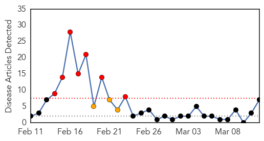
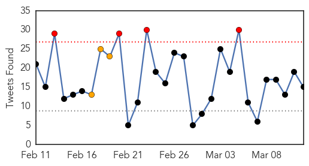
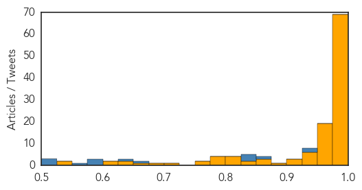

Hepatitis
30-Day Web Trend
7 alerts, 3 warnings

30-Day Twitter Trend
1 alerts, 0 warnings

Article Locations

Article Confidences
Top Articles:
- 0.948
- Pallisa registers more than 1,300 hepatitis B cases
- 0.871
- WHO urges stepped-up battle against hepatitis B
- 0.860
- WHO Urges Stepped-up Battle against Hepatitis B — Naharnet
- 0.838
- UN guidelines aim to simplify care for millions infected with hepatitis B
- 0.730
- WHO issues its first hepatitis B treatment guidelines
- 0.636
- WHO urges stepped-up battle against hepatitis B
- 0.560
- The Bay Area Reporter Online
Top Tweets:
- 0.609
- Worldwide some 240 million people have chronic hepatitis B virus infection with the highest rates of infection in Africa and Asia HepB
Ebola
30-Day Web Trend
0 alerts, 0 warnings

30-Day Twitter Trend
4 alerts, 3 warnings

Article Locations

Article Confidences
Top Articles:
- 1.000
- More children at risk of measles in wake of Ebola epidemic
- 1.000
- No new Ebola cases in Liberia for more than two weeks: WHO
- 1.000
- American diagnosed with Ebola to be flown to US from Sierra Leone
- 1.000
- British Army medic with Ebola evacuated with two other suspected cases
- 1.000
- UK national contracts Ebola in Sierra Leone
- 1.000
- More children at risk of measles in wake of Ebola epidemic -- NationNews Barbados -- Local, Regional and International News nationnews.com
- 1.000
- Ebola death toll surpasses 10,000: WHO
- 1.000
- WHO: Ebola cases keep coming, but footprint is smaller
- 1.000
- WHO: Ebola Deaths Pass 10K Mark
- 1.000
- More children at risk of measles in wake of Ebola epidemic
- 1.000
- Ebola Outbreak Disrupted Routine Medical Care in West Africa
- 0.999
- British Healthworker Tests Positive For Ebola
- 0.999
- New Ebola patient arrives for treatment at NIH Bethesda
- 0.999
- Two more healthcare workers return to UK
- 0.999
- American Ebola patient to get treatment in Maryland
- 0.999
- Researchers Warn of Ebola Fallout
- 0.999
- US Health Worker With Ebola Headed Home for Treatment
- 0.999
- WHO and WFP unite to gain zero Ebola cases as Koroma retreats to fight personal political battle
- 0.999
- Briton diagnosed with Ebola in Sierra Leone
- 0.999
- British Ebola patient came into contact with four colleagues, officials say
- 0.999
- Briton diagnosed with Ebola in Sierra Leone
- 0.999
- UPDATE 1-UK Ebola patient home for treatment, 4 more for monitoring
- 0.999
- 4 Came Into Contact With Infected Worker; Medic And 2 Others Evacuated
- 0.999
- British healthcare worker contracts Ebola on Falmouth-based medical ship mission to Africa
- 0.999
- Health worker with Ebola admitted to NIH
- 0.999
- UK Ebola patient to arrive in London today
- 0.999
- American Ebola patient to be treated at the NIH, 2nd case to date
- 0.999
- American with Ebola to return to U.S. from Sierra Leone for treatment
- 0.998
- UK health worker with Ebola flying back, 4 others being assessed
- 0.998
- UK military healthcare worker tests positive for Ebola in Sierra Leone
- 0.998
- Ebola military healthcare worker flown back to the UK to begin her treatment
- 0.998
- New Cases Quickly Disappearing, To Detriment Of Vaccine Development
- 0.998
- Sierra Leone sees worrying spike in Ebola cases over week
- 0.998
- WHO and World Food Programme join forces to reach zero Ebola cases
- 0.998
- Ebola Briton treated in hospital
- 0.998
- Ebola Briton treated in hospital
- 0.998
- Ebola Briton treated in hospital
- 0.998
- Ebola Briton treated in hospital
- 0.998
- Ebola: British patient and five colleagues flown home
- 0.997
- Tekmira Pharmaceuticals Corp Begins Trial Of TKM-Ebola-Guinea In Sierra Leone
- 0.997
- Ebola crisis as UK soldier with virus is quarantined in London hospital
- 0.997
- British military healthcare worker infected with Ebola arrives at Royal Free
- 0.997
- Ebola cases in the United States
- 0.997
- Ebola infected British healthcare staff flown back from Sierra Leone – 4 others under observation
- 0.997
- American Ebola patient to be treated near US capital
- 0.996
- No New Ebola Case in Liberia
- 0.996
- Liberia Awaits Ebola-free Declaration to Remember its Victims
- 0.995
- Newcastle hospital on standby to receive military workers screened for Ebola
- 0.994
- Waning interest in Ebola is biggest threat to overcoming virus
- 0.994
- British healthcare worker with Ebola being flown to the UK
Showing top 50 articles...
Top Tweets:
- 0.943
- Ebola Outbreak Update: New Cases Quickly Disappearing To Detriment Of ... - Medical Daily http://t.co/DUahH6DmLC ebola EVD
- 0.938
- RT: Ebola deadly How Ebola leads to exigency Ebola EbolaAlert EbolaOutnreak EbolaResponse https://t.co/gA0fNPx8nv h…
- 0.871
- RT: WorldBank estimates Ebola virus has cost SierraLeone Liberia & Guinea >US$2 billion. Read more: http://t.co/7iFlT…
- 0.850
- 10000 have died from Ebola in current outbreak WHO announces - 10News http://t.co/go6q82a83E ebola EVD
- 0.845
- Ebola: British health worker tests positive for Ebola http://t.co/7DUTbvOSPg EBOLANEWS
- 0.845
- Ebola Report. 24247 cases 9961 deaths. Guinea 58 cases SierraLeone 58 new cases Liberia 0 cases http://t.co/d2izaWX9iw
- 0.674
- Ebola Deaths Top 10000 - TIME http://t.co/WAOYXFzIz4 ebola EVD
- 0.643
- RT: @UNMEER The first symposium on the social sciences and the Ebola outbreak in West Africa http://t.co/983ye5aEnV
- 0.596
- NBC's Nancy Snyderman Resigns After Ebola Quarantine Scandal - ABC News http://t.co/0sTcIptL7Y ebola EVD
- 0.581
- [BBC]: Ebola: British patient has been evacuated from Sierra Leone http://t.co/Ht5fgs2ejw
- 0.579
- RT: @richardhorton1 "Can Ebola be a route to nation-building?" healthsystems Guinea Liberia SierraLeone http://t…
- 0.571
- Liberian Leader Concedes Errors in Response to Ebola - New York Times http://t.co/Zw6xUPDMZt ebola EVD
- 0.521
- Liberia Awaits Ebola-free Declaration to Remember its Victims - Voice of America http://t.co/R8vCfn9yMe ebola EVD
- 0.518
- RT: News: NIH to admit American healthcare worker with Ebola virus disease http://t.co/ClZUW2AoZe
- 0.507
- UK military healthcare worker diagnosed with Ebola in Sierra Leone is being brought home for care afterall. https://t.co/iftuBOCJCd